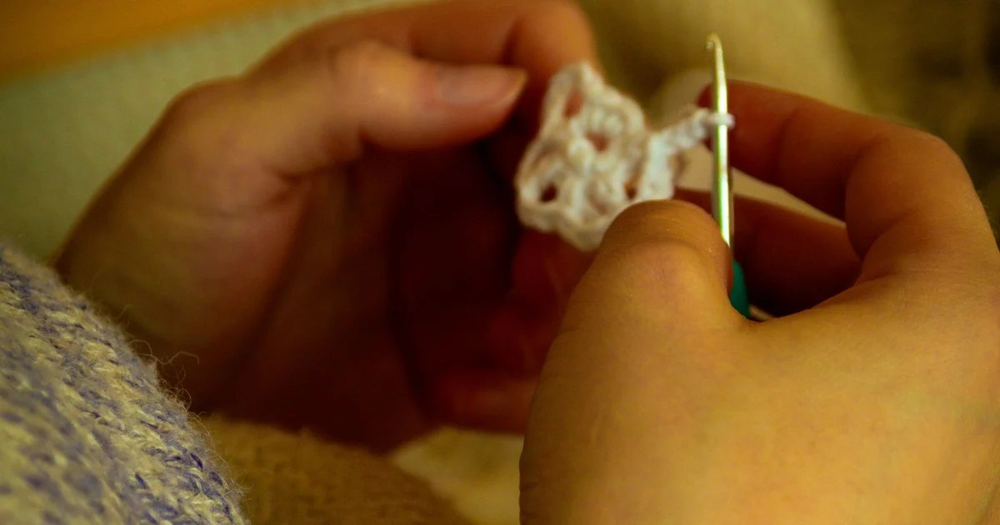

Tools, Yarn & Materials · Beginner guide
What Do Yarn Weight Labels Mean?
Read yarn weight as a broad thickness category, then confirm the pattern gauge and hook recommendation.

Yarn weight describes thickness categories, not how much a skein weighs. The Craft Yarn Council categories run from 0 (Lace) through 7 (Jumbo); hook ranges are guidelines.
Before you begin
Find the category number or name, then compare the actual yarn with the pattern. A category does not guarantee identical thickness across brands.
Step-by-step instructions
- Find the category symbol or description on the yarn label.
- Check the pattern’s category, hook, and gauge. Follow gauge when the project’s size matters.
- If substituting, swatch in the pattern stitch and assess measurements and fabric.
- Use the category alongside fiber, yardage, and care details rather than as the only comparison.
What to check
A category is a range, not a promise
Two yarns in one category can still make different fabrics. If your swatch misses pattern gauge, the label alone cannot predict the finished size.
For category names and suggested hook ranges, see the Craft Yarn Council’s yarn-weight chart.
Frequently asked questions
Does a higher weight number mean more yarn?
No. The category describes thickness. Skein weight and yardage are separate label details.
Does the category tell me the exact hook?
No. Suggested ranges are guidelines; pattern gauge is more specific.
Can yarn in the same weight category replace another yarn?
Not automatically. Compare fiber, yardage, gauge, and the resulting fabric; the category is a broad guide, not a guarantee of identical thickness or behavior.
Separate yarn thickness from skein mass
“Yarn weight” refers to a thickness category; the net weight on a package describes how heavy that skein is. A 100-gram skein is not necessarily the same length as another 100-gram skein because fiber and construction affect yardage. The pattern’s yardage requirement is a length, so compare yards or meters when estimating how much to buy. Keep category, skein mass, and yardage as three separate label details.
Treat categories and hook ranges as guides
The Craft Yarn Council system groups yarns into numbered categories from 0 (Lace) through 7 (Jumbo). A category helps narrow choices, but yarns in the same group can vary in thickness, twist, and fiber. Suggested hook ranges are starting points. The pattern’s gauge is more specific for a project with target dimensions. If substituting, make a swatch in the pattern stitch and compare both the measurement and the fabric feel.
Why two labels in one category can differ
The category groups yarns broadly; it does not specify the exact diameter, twist, fiber, or behavior of every strand. Two labels in one category can produce different stitch definition or drape. The suggested hook range is also a general reference, not a promise that the pattern gauge will match. Compare the category with the pattern, then use a swatch in the pattern stitch when size matters. The linked Craft Yarn Council chart is useful for identifying the category system, while the actual label and pattern guide a project-specific choice.
Read the label beyond the category number
The category is only one part of the comparison. Look for fiber content, yards or meters, care, and the pattern’s recommended hook and gauge. A yarn with a similar category may still have a different twist or texture and make a different fabric. If the pattern uses a textured stitch or openwork, check the substitute in that same stitch rather than a plain swatch. The label can help narrow choices, but the sample shows whether the yarn and hook work together for this project.
Common mistakes and how to fix them
- Confusing skein weight with yarn weight. One is package mass; the other is thickness category. Check the label’s yardage separately.
- Assuming the same category means identical yarn. Yarns vary in fiber and construction. Swatch before using a substitute for a sized project.
- Using the suggested hook range as a pattern rule. It is a general guide. Follow the pattern hook and gauge when provided.
Tips that make it easier
- Read the category name and number, then compare the pattern’s gauge.
- Compare yardage rather than package mass when matching project requirements.
- Use the Craft Yarn Council chart linked in this article for category references.
A useful next step
Check the pattern and label together, then use a sample to confirm how the materials behave before starting the full project.